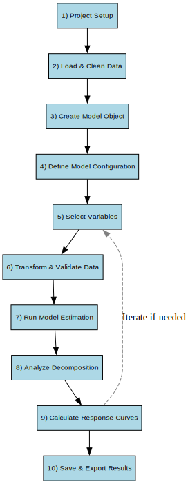

Modeling Overview¶
Our workflows are designed to ensure consistency, transparency, and reproducibility across projects.
The msmp.emea package supports two distinct yet complementary approaches for analyzing media effectiveness: a Bayesian Marketing Mix Modeling (Bayesian MMM) approach and a more granular High-Definition (HD) modeling approach. Both share a common foundation but are designed to answer different types of business questions.
Overview of Modeling Approaches¶
The Bayesian MMM approach is a modern version of the classical Marketing Mix Modeling framework, implemented using Bayesian inference. This method enables the quantification of media effectiveness and ROI while explicitly accounting for uncertainty in parameter estimates.
Key characteristics of the Bayesian MMM approach:
- Prior knowledge incorporation: Prior distributions can be used to incorporate historical learnings or domain expertise into the model.
- Flexibility: The Bayesian framework supports complex modeling features such as hierarchical structures, seasonality components, and non-linear saturation effects.
This approach is ideal when the goal is to build robust, interpretable models with quantified uncertainty and leverage prior knowledge to stabilize estimates in data-scarce environments.
HD MMM is a build on top of the current MMM toolkit where you would be able to take a more detailed look into the contributions of your total media channel. For example, two main strategies were used for a digital channel - strategy A and strategy B.
The HD algorithm will then be able to approximate the effectiveness of each strategy based on the flighting pattern and give you a breakdown of each strategy's contribution that makes up the total digital channel's contribution in the MMM model.
Workflow¶


Workflow Templates¶
The msmp.emea package includes a set of predefined workflow templates designed to guide you through the media modeling process. These templates are accessible directly from RStudio, helping ensure a standardized, efficient, and reproducible workflow.
Available Templates¶
- Model-Workflow: A standard template for running a complete MMM analysis.
- HD-MMM: A template for Hierarchical Decomposition modeling, enabling granular analysis within channels.
- Unnest-Models: A utility template for unnesting models and analyzing their individual components.
These templates streamline your workflow by reducing setup time, minimizing the risk of error, and ensuring all critical steps are included.
How to Use Templates in RStudio¶
To launch a template in RStudio:
- Click on the New File icon.
- Select R Markdown.
- Choose From Template, then pick the relevant
msmp.emeatemplate.
RStudio will create a new document pre-filled with the appropriate structure, guidance, and placeholders to help you get started quickly.